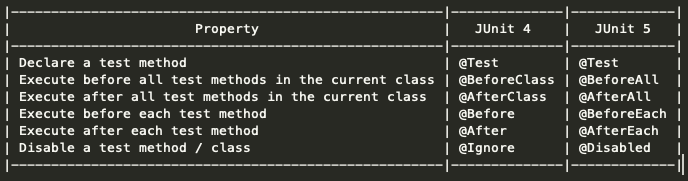

Unit Testing & Mocking with :
By: Ankit Gubrani / @ankitgubrani90
Agenda
- What is Unit Testing ?
- Why Unit Testing ?
- Code Coverage
- What is Mocking ?
- Why Mock ?
- Available Mocking frameworks
- AEM Mocks
- Demo
.about-me{
name: Ankit Gubrani;
title: Sr. Software Engineer;
working at: Playstation;
email-id: Ankit.gubrani90@gmail.com;
linkedIn: linkedin.com/in/ankitgubrani;
twitter: @ankitgubrani90;
blog: codebrains.co.in;
}
Unit Tests :
- Used to test individual code components (Units) of a software & ensure that code works the way it was intended, in ISOLATION
- Helps the developers to verify that the logic for a code component of a software is correct
- Helps detecting bugs in early stages, when fixing them is faster & cost effective
Benefits of Unit Tests :
- Helps raise quality of code
- Acts as Documentation - Helps understand design of code working
- Lowers the cost of fixing a defect - as defects are detected during unit testing is lesser in comparison to that of defects detected at higher levels
Some useful tips for unit tests :
- Before fixing a defect, write a test that exposes the defect.
- That will make your test suite more comprehensive & will even make sure same issue doesn't comes up again
- Aim at covering all branches/paths in your Unit Test, pay particular attention to loops & if conditions
- Use test data that is close to that of production
JUnit-4 V/S JUnit-5
- Architecture :
- JUnit 4 has everything bundled into 1 JAR
- JUnit 5 is composed of 3 sub-projects: JUnit Platform, JUnit Jupiter(new annotations), JUnit Vintage(makes it backwards compatible)
- JDK versions Supported :
- JUnit 4 - Java 5 or higher
- JUnit 5 - Java 8 or higher
JUnit-4 V/S JUnit-5 ANNOTATIONS

Some New Annotations introduced with JUnit-5
- @DisplayName - declare custom display names for test classes & methods, displayed by test runners & in the reports
- @Disabled - Disables a test method or if set at class level can also disable whole Test class
- @RepeatedTest - repeat a test a specified number of times
- @ParameterizedTest - run a test multiple times with different arguments
Please refer confluence for Full List
Demo

Code Coverage
- Code coverage is a measure which tells "percentage of source code tested by Unit test"
- JaCoCo is a free Java code coverage library
- Reports generated using JaCoCo also reports the complexity of each method & how much is untested
- Sample Code Coverage Report AKA DEMO
What is Mocking ?
- Definition - "Mocking is to make a replica or imitation of something"
- Mocking is creating objects that simulate the behavior of real objects
- For instance, an object (or piece of code) that you want to test may have dependencies on other complex objects. To isolate the behavior of the object you want to test you replace the other objects by mocks that simulate the behavior of the real objects
Why Mock ?
- you don’t have to write any mocks/stubs yourself
- Mocks allows you to disconnect units in your code, thereby allowing unit-testing (or testing in Isolation)
Types of Mocking frameworks :
- Proxy based ( eg: EasyMock, JMock, Mockito)
- Byte code Manipulation / Classloader remapping ( eg: jMockit, PowerMock)
What is Proxy based Mocking? How it works?
A proxy is just an object which will be used instead of the original object. If a method of the proxy object is called than the proxy object can decide what it will do with this call :
- delegate it to the original object
- handles the call itself
Cons of Proxy based Mocking :
- you cannot mock a final class, or static or final methods
- if you want to return a mock when a constructor is called, it won’t be possible
Available Mocking Frameworks :
- Mockito (Proxy based
- JMock (Proxy based)
- EasyMock (Proxy based)
- PowerMock (Byte code Manipulation)
AEM Mocks :
- provides an in-memory AEM environment which is suitable for Unit Tests
- Also provides access to:
- mocked OSGi
- mocked JCR
- mocked Sling
Demo Time!

Thank You
Contact Me :
LinkedIn : Ankit Gubrani
Twitter : @ankitgubrani90
Email-ID : ankit.gubrani@codebrains.co.in
Blog : www.codebrains.co.in